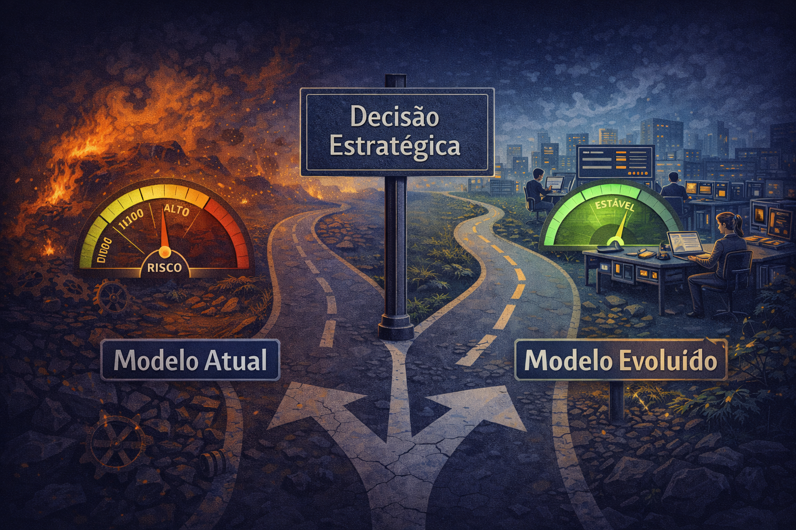

A Realidade Operacional
Capacidade finita, demanda crescente e pressão por previsibilidade.

Capacidade vs Demanda
- Equipe: 26 pessoas
- Projetos estratégicos + sustentação
- Capacidade é finita
- Demanda não é

Multialocação Crônica
- Múltiplos projetos simultâneos
- Sustentação em paralelo
- Urgências competem com entregas
- Fragmentação reduz eficiência real

Sustentação Reativa / Custo Invisível
- Chamados recorrentes
- Tratamento paliativo
- Custo invisível (não vira projeto)
- Consome HH todos os dias

Interface com Nível 1
- Triagem inicial externa
- Transferência de conhecimento frágil
- Dúvidas viram chamados técnicos
- Sobrecarga artificial
Causas Estruturais
Qualidade, documentação, evolução tecnológica e governança.

Bypass da Qualidade
- Implementação vai direto para produção
- QA existe, mas não está no fluxo
- Custo aparece como retrabalho
- Instabilidade acumulada

Fragilidade de Documentação
- Sem topologia / README / wiki viva
- Dependência de pessoas, não de processo
- Onboarding e manutenção mais caros
- Sem documentação, não há sustentabilidade

Débito Técnico e Framework Defasado
- Atualizações postergadas
- Custo futuro e risco de segurança
- Mais difícil evoluir com previsibilidade
- Risco institucional acumulado

Papéis e Governança Parcial
- UX, Dev, QA, DevOps, mantenedores
- Formalizar responsabilidades estratégicas
- Arquitetura, dono da sustentação, portfólio
- Clareza estrutural
Impacto Institucional
Quando os fatores se somam, o resultado deixa de ser operacional e vira risco.

Risco Institucional
- Sustentação reativa
- Débito técnico
- Multialocação + governança parcial
- Segurança • interrupção • custo futuro
Oportunidades Estratégicas
Ampliar capacidade efetiva e preparar o Tribunal para a agenda de IA com governança.

IA (interna) como alavanca
- Acelerar desenvolvimento
- Apoiar testes e QA
- Documentação e triagem
- Alavanca de produtividade

IA como estratégia institucional
- Governança e política de dados
- Arquitetura e segurança
- Critérios e responsabilidade
- Estratégia — não modismo
A Virada
Modelo sustentável, decisão estratégica e plano de transição (90 dias).

Modelo Sustentável
- Separação clara de fluxos
- Governança formalizada
- Qualidade integrada
- Redução da recorrência

Decisão Estratégica
- Manter também é decidir
- Evoluir exige disciplina
- Sem ruptura — com método
- Escolha estratégica

Plano de Transição (90 dias)
- Estabilização
- Organização
- Evolução estrutural
- Reorganizar a base em 90 dias